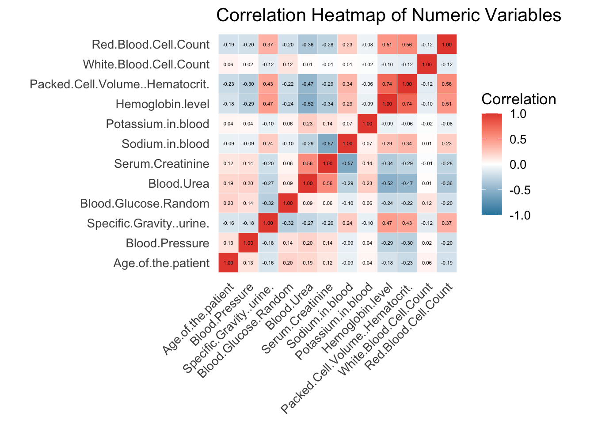
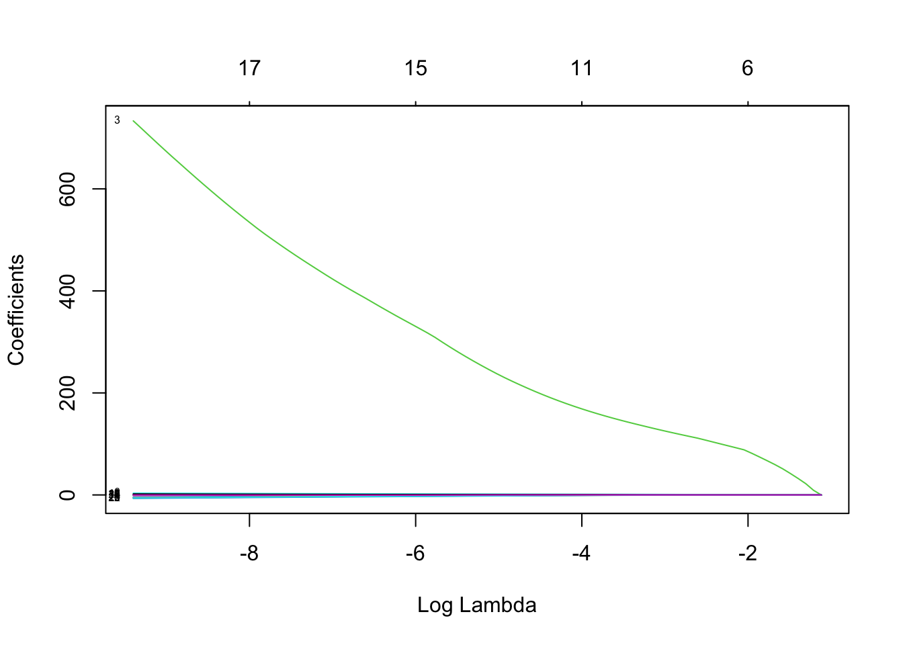
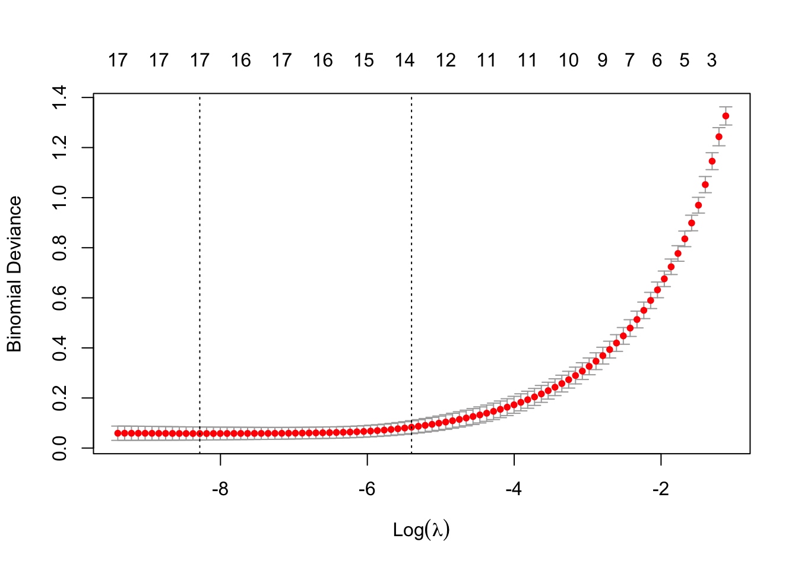
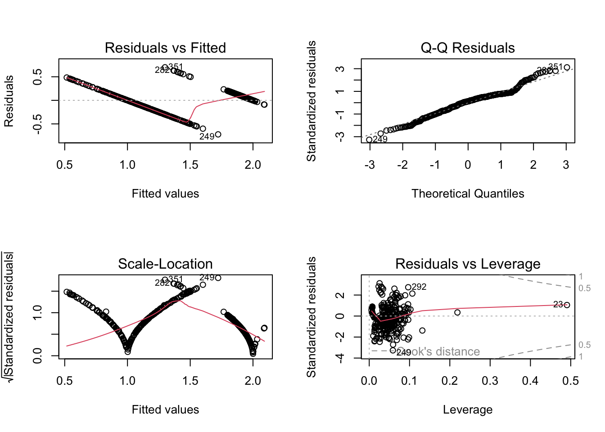
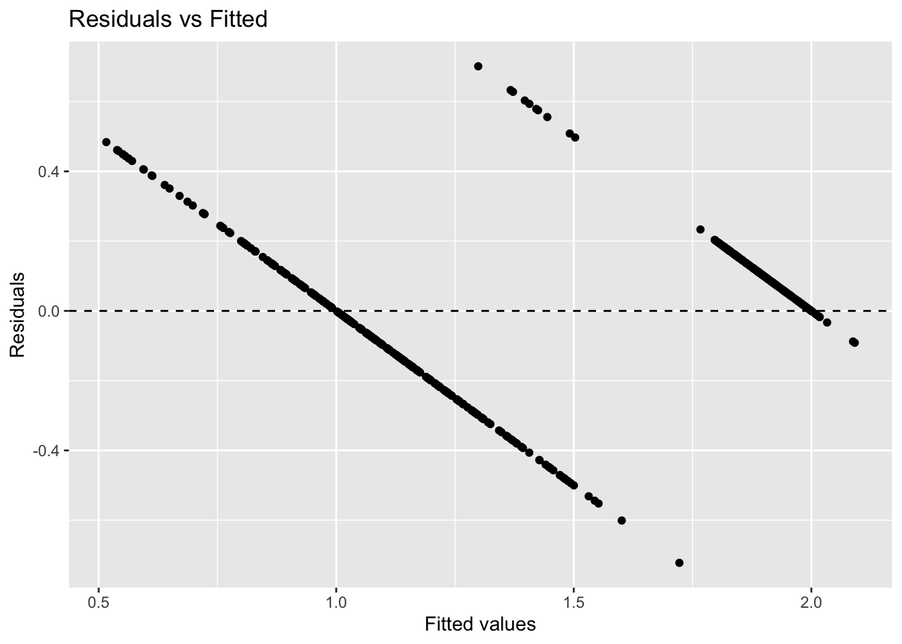
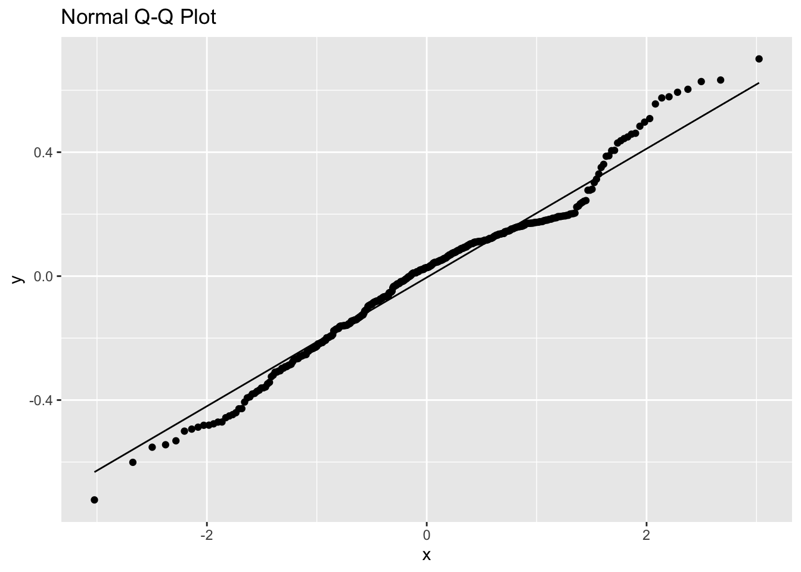
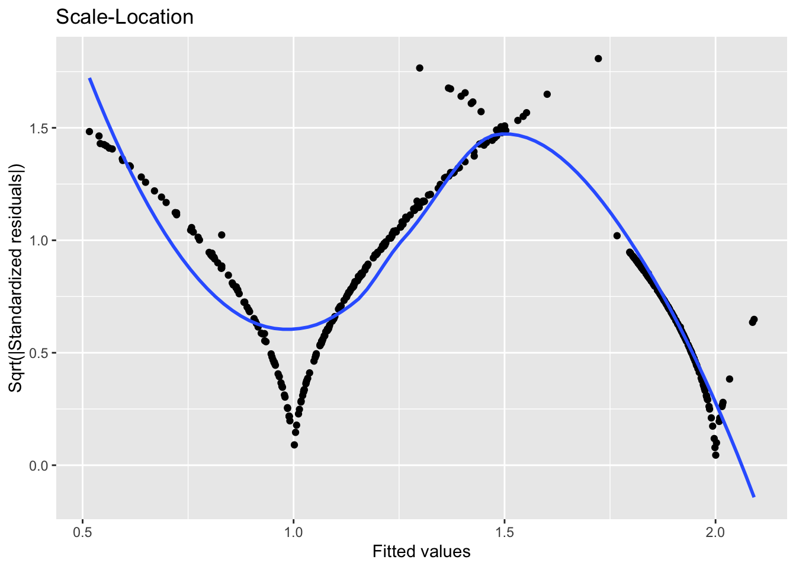
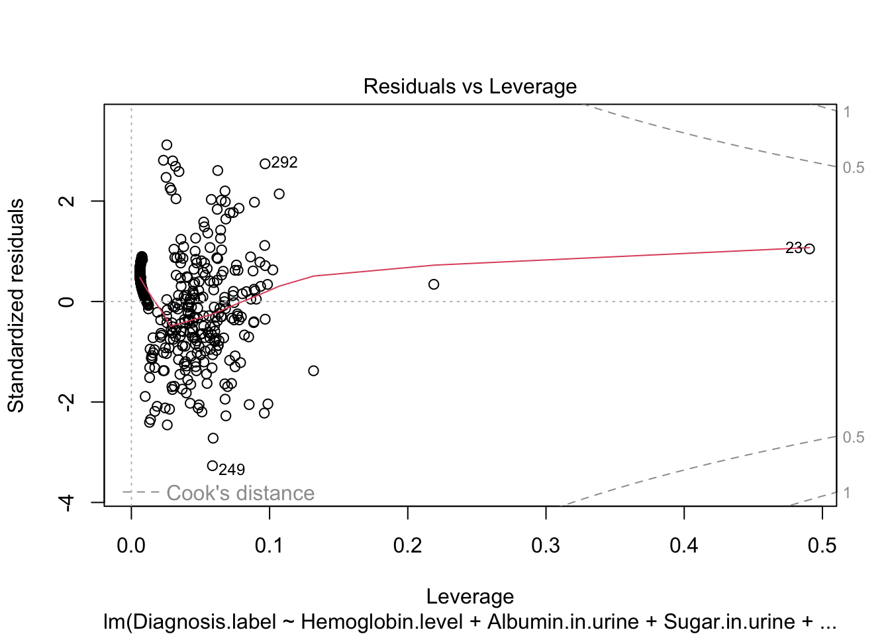

library(caret)
library(ggplot2)
library(corrplot)
library(dplyr)
library(reshape2)
library(glmnet)chronic kidney disease
chronic kidney disease dataset analysis
data preparation
file_path <- '/Users/apple/Desktop/me/WCM/semester/fall1/biosta1/final/kidney_disease.csv'
df <- read.csv(file_path)
#str(df)
head(df) Patient.ID Age.of.the.patient Blood.Pressure Specific.Gravity..urine.
1 id,k age bp sg
2 0 48 80 1.02
3 1 7 50 1.02
4 2 62 80 1.01
5 3 48 70 1.005
6 4 51 80 1.01
Albumin.in.urine Sugar.in.urine Red.Blood.Cells.in.urine Pus.Cells.in.urine
1 al su rbc pc
2 1 0 normal
3 4 0 normal
4 2 3 normal normal
5 4 0 normal abnormal
6 2 0 normal normal
Pus.Cell.Clumps Bacteria.in.urine Blood.Glucose.Random Blood.Urea
1 pcc ba bgr bu
2 notpresent notpresent 121 36
3 notpresent notpresent 18
4 notpresent notpresent 423 53
5 present notpresent 117 56
6 notpresent notpresent 106 26
Serum.Creatinine Sodium.in.blood Potassium.in.blood Hemoglobin.level
1 sc sod pot hemo
2 1.2 15.4
3 0.8 11.3
4 1.8 9.6
5 3.8 111 2.5 11.2
6 1.4 11.6
Packed.Cell.Volume..Hematocrit. White.Blood.Cell.Count Red.Blood.Cell.Count
1 pcv wc rc
2 44 7800 5.2
3 38 6000
4 31 7500
5 32 6700 3.9
6 35 7300 4.6
Hypertension Diabetes.Mellitus Coronary.Artery.Disease Appetite
1 htn dm cad appet
2 yes yes no good
3 no no no good
4 no yes no poor
5 yes no no poor
6 no no no good
Pedal.Edema..swelling.of.legs. Anemia Diagnosis.label
1 pe ane classification
2 no no ckd
3 no no ckd
4 no yes ckd
5 yes yes ckd
6 no no ckdFirst check duplicated rows.
#check duplicated rows
sum(duplicated(df))[1] 0#df[duplicated(df),]Delete extra columns, such as the ID column. Classify the numerical and categorical data.
df <- subset(df, select = -Patient.ID)#please run this for one first time
#df <- df[, !names(df) %in% c("id")]
#str(df)
#colnames(df)
#name the numerical and categorical data
num_cols <- c(
"Age.of.the.patient",
"Blood.Pressure",
"Specific.Gravity..urine.",
"Blood.Glucose.Random",
"Blood.Urea",
"Serum.Creatinine",
"Sodium.in.blood",
"Potassium.in.blood",
"Hemoglobin.level",
"Packed.Cell.Volume..Hematocrit.",
"White.Blood.Cell.Count",
"Red.Blood.Cell.Count"
)
df[num_cols] <- lapply(df[num_cols], function(x) as.numeric(x))
str(df)'data.frame': 401 obs. of 25 variables:
$ Age.of.the.patient : num NA 48 7 62 48 51 60 68 24 52 ...
$ Blood.Pressure : num NA 80 50 80 70 80 90 70 NA 100 ...
$ Specific.Gravity..urine. : num NA 1.02 1.02 1.01 1 ...
$ Albumin.in.urine : chr "al" "1" "4" "2" ...
$ Sugar.in.urine : chr "su" "0" "0" "3" ...
$ Red.Blood.Cells.in.urine : chr "rbc" "" "" "normal" ...
$ Pus.Cells.in.urine : chr "pc" "normal" "normal" "normal" ...
$ Pus.Cell.Clumps : chr "pcc" "notpresent" "notpresent" "notpresent" ...
$ Bacteria.in.urine : chr "ba" "notpresent" "notpresent" "notpresent" ...
$ Blood.Glucose.Random : num NA 121 NA 423 117 106 74 100 410 138 ...
$ Blood.Urea : num NA 36 18 53 56 26 25 54 31 60 ...
$ Serum.Creatinine : num NA 1.2 0.8 1.8 3.8 1.4 1.1 24 1.1 1.9 ...
$ Sodium.in.blood : num NA NA NA NA 111 NA 142 104 NA NA ...
$ Potassium.in.blood : num NA NA NA NA 2.5 NA 3.2 4 NA NA ...
$ Hemoglobin.level : num NA 15.4 11.3 9.6 11.2 11.6 12.2 12.4 12.4 10.8 ...
$ Packed.Cell.Volume..Hematocrit.: num NA 44 38 31 32 35 39 36 44 33 ...
$ White.Blood.Cell.Count : num NA 7800 6000 7500 6700 7300 7800 NA 6900 9600 ...
$ Red.Blood.Cell.Count : num NA 5.2 NA NA 3.9 4.6 4.4 NA 5 4 ...
$ Hypertension : chr "htn" "yes" "no" "no" ...
$ Diabetes.Mellitus : chr "dm" "yes" "no" "yes" ...
$ Coronary.Artery.Disease : chr "cad" "no" "no" "no" ...
$ Appetite : chr "appet" "good" "good" "poor" ...
$ Pedal.Edema..swelling.of.legs. : chr "pe" "no" "no" "no" ...
$ Anemia : chr "ane" "no" "no" "yes" ...
$ Diagnosis.label : chr "classification" "ckd" "ckd" "ckd" ...cat_cols <- names(df)[sapply(df, is.character) | sapply(df, is.factor)]
#num_col <- names(df)[!(sapply(df, is.character) | sapply(df, is.factor))]
#
cat_cols [1] "Albumin.in.urine" "Sugar.in.urine"
[3] "Red.Blood.Cells.in.urine" "Pus.Cells.in.urine"
[5] "Pus.Cell.Clumps" "Bacteria.in.urine"
[7] "Hypertension" "Diabetes.Mellitus"
[9] "Coronary.Artery.Disease" "Appetite"
[11] "Pedal.Edema..swelling.of.legs." "Anemia"
[13] "Diagnosis.label" #num_col
#summary(df)Deal with “tab”.
df <- df[-1,]
#delete the first row: df <- df[-1, ]
#delete the first two rows: df <- df[-c(1,2), ]
#delete the i th row: df <- df[-i, ]
#remain 2 to all rows df <- df[2:nrow(df), ]
#head(df)
df$`Diabetes.Mellitus` <- gsub("\\\tno", "no", df$`Diabetes.Mellitus`)
df$`Diabetes.Mellitus` <- gsub("\\\tyes", "yes", df$`Diabetes.Mellitus`)
df$`Coronary.Artery.Disease` <- gsub("\\\tno", "no", df$`Coronary.Artery.Disease`)
df$`Coronary.Artery.Disease` <- gsub("\\\tyes", "yes", df$`Coronary.Artery.Disease`)
df$Diagnosis.label <- gsub("ckd\\\t", "ckd", df$Diagnosis.label )
#summary(df)Deal with NAs.
colSums(is.na(df)) Age.of.the.patient Blood.Pressure
9 12
Specific.Gravity..urine. Albumin.in.urine
47 0
Sugar.in.urine Red.Blood.Cells.in.urine
0 0
Pus.Cells.in.urine Pus.Cell.Clumps
0 0
Bacteria.in.urine Blood.Glucose.Random
0 44
Blood.Urea Serum.Creatinine
19 17
Sodium.in.blood Potassium.in.blood
87 88
Hemoglobin.level Packed.Cell.Volume..Hematocrit.
52 71
White.Blood.Cell.Count Red.Blood.Cell.Count
106 131
Hypertension Diabetes.Mellitus
0 0
Coronary.Artery.Disease Appetite
0 0
Pedal.Edema..swelling.of.legs. Anemia
0 0
Diagnosis.label
0 Missing value imputation methods:
For numerical variables (e.g., age, blood pressure, blood sugar): Randomly select some values from the known non-missing values of the column and replace the missing values. • If the mean or median is used for imputation, all missing values will be replaced with the same number, which will reduce the variance of the variable and cause the data to be “oversmoothed”. Random imputation allows the imputed values to maintain the true distribution characteristics of the data (e.g., the probability that people with high blood sugar will take higher values and people with low blood sugar will take lower values is still preserved). After this processing, the model training will not lose information diversity due to a large number of identical values.
For categorical variables: We replace missing values with the value that appears most frequently (mode). These variables have no continuous relationship (they cannot be averaged or randomly selected), and mode imputation is the most natural choice because it preserves the main distribution of the data; it does not introduce invalid categories; and it has the least impact on model bias.
#random -- NA--numeric
Random_value_Imputation <- function(x, seed=42) {
set.seed(seed)
na_index <- is.na(x)
x[na_index] <- sample(x[!na_index], sum(na_index), replace=TRUE)
return(x)
}# "Albumin.in.urine" "Sugar.in.urine"
#mode -- NA--cate
impute_mode <- function(x, seed=42) {
set.seed(seed)
mode_val <- names(sort(table(x), decreasing = TRUE))[1]
x[is.na(x)] <- mode_val
return(x)
}
#num_cols
#cat_cols
for (col in num_cols) {
df[[col]] <- Random_value_Imputation(df[[col]], seed=203)
}
for (col in cat_cols) {
df[[col]] <- impute_mode(df[[col]], seed=203)
}Draw a heatmap.
Drawing a correlation plot is essential: If a high correlation is found (|r| > 0.8), it is recommended to remove one of the variables; If there are many variables, run vif() first and then delete them; Variable selection is best done after cleaning and before modeling; If you want to predict (rather than explain), you can use penalized regression for automatic selection.
num_data <- df[, num_cols]
#make sure it's all numeric
num_data <- mutate_all(num_data, function(x) as.numeric(as.character(x)))
#complete.obs omits NA
corr_matrix <- cor(num_data, use = "complete.obs")
#turn it into matrix
corr_melt <- melt(corr_matrix)
ggplot(corr_melt, aes(x = Var1, y = Var2, fill = value)) +
geom_tile(color = "white") +
scale_fill_gradient2(low = "#2E86AB", mid = "white", high = "#E74C3C",
midpoint = 0, limit = c(-1, 1), name = "Correlation") +
theme_minimal(base_size = 13) +
theme(axis.text.x = element_text(angle = 45, vjust = 1, hjust = 1),
panel.grid = element_blank(),
axis.title = element_blank()) +
coord_fixed() +
geom_text(aes(label = sprintf("%.2f", value)), size = 1.5, color = "black") +
labs(title = "Correlation Heatmap of Numeric Variables")
Perform label encoding for categorical variables
summary(df) Age.of.the.patient Blood.Pressure Specific.Gravity..urine.
Min. : 2.00 Min. : 50.00 Min. :1.005
1st Qu.:42.00 1st Qu.: 70.00 1st Qu.:1.010
Median :54.00 Median : 80.00 Median :1.020
Mean :51.56 Mean : 76.53 Mean :1.017
3rd Qu.:64.25 3rd Qu.: 80.00 3rd Qu.:1.020
Max. :90.00 Max. :180.00 Max. :1.025
Albumin.in.urine Sugar.in.urine Red.Blood.Cells.in.urine
Length:400 Length:400 Length:400
Class :character Class :character Class :character
Mode :character Mode :character Mode :character
Pus.Cells.in.urine Pus.Cell.Clumps Bacteria.in.urine Blood.Glucose.Random
Length:400 Length:400 Length:400 Min. : 22.0
Class :character Class :character Class :character 1st Qu.:100.0
Mode :character Mode :character Mode :character Median :122.0
Mean :149.9
3rd Qu.:169.0
Max. :490.0
Blood.Urea Serum.Creatinine Sodium.in.blood Potassium.in.blood
Min. : 1.50 Min. : 0.400 Min. : 4.5 Min. : 2.500
1st Qu.: 27.00 1st Qu.: 0.900 1st Qu.:135.0 1st Qu.: 3.800
Median : 44.00 Median : 1.300 Median :138.0 Median : 4.400
Mean : 58.65 Mean : 3.100 Mean :137.6 Mean : 4.774
3rd Qu.: 68.00 3rd Qu.: 2.825 3rd Qu.:142.0 3rd Qu.: 4.900
Max. :391.00 Max. :76.000 Max. :163.0 Max. :47.000
Hemoglobin.level Packed.Cell.Volume..Hematocrit. White.Blood.Cell.Count
Min. : 3.10 Min. : 9.00 Min. : 2200
1st Qu.:10.30 1st Qu.:32.75 1st Qu.: 6400
Median :12.60 Median :40.00 Median : 8000
Mean :12.47 Mean :38.92 Mean : 8357
3rd Qu.:15.00 3rd Qu.:45.00 3rd Qu.: 9800
Max. :17.80 Max. :54.00 Max. :26400
Red.Blood.Cell.Count Hypertension Diabetes.Mellitus
Min. :2.100 Length:400 Length:400
1st Qu.:3.900 Class :character Class :character
Median :4.700 Mode :character Mode :character
Mean :4.709
3rd Qu.:5.400
Max. :8.000
Coronary.Artery.Disease Appetite Pedal.Edema..swelling.of.legs.
Length:400 Length:400 Length:400
Class :character Class :character Class :character
Mode :character Mode :character Mode :character
Anemia Diagnosis.label
Length:400 Length:400
Class :character Class :character
Mode :character Mode :character
#colSums(is.na(df))
head(df) Age.of.the.patient Blood.Pressure Specific.Gravity..urine. Albumin.in.urine
2 48 80 1.020 1
3 7 50 1.020 4
4 62 80 1.010 2
5 48 70 1.005 4
6 51 80 1.010 2
7 60 90 1.015 3
Sugar.in.urine Red.Blood.Cells.in.urine Pus.Cells.in.urine Pus.Cell.Clumps
2 0 normal notpresent
3 0 normal notpresent
4 3 normal normal notpresent
5 0 normal abnormal present
6 0 normal normal notpresent
7 0 notpresent
Bacteria.in.urine Blood.Glucose.Random Blood.Urea Serum.Creatinine
2 notpresent 121 36 1.2
3 notpresent 230 18 0.8
4 notpresent 423 53 1.8
5 notpresent 117 56 3.8
6 notpresent 106 26 1.4
7 notpresent 74 25 1.1
Sodium.in.blood Potassium.in.blood Hemoglobin.level
2 144 5.0 15.4
3 140 3.5 11.3
4 140 4.0 9.6
5 111 2.5 11.2
6 147 4.1 11.6
7 142 3.2 12.2
Packed.Cell.Volume..Hematocrit. White.Blood.Cell.Count Red.Blood.Cell.Count
2 44 7800 5.2
3 38 6000 5.8
4 31 7500 3.7
5 32 6700 3.9
6 35 7300 4.6
7 39 7800 4.4
Hypertension Diabetes.Mellitus Coronary.Artery.Disease Appetite
2 yes yes no good
3 no no no good
4 no yes no poor
5 yes no no poor
6 no no no good
7 yes yes no good
Pedal.Edema..swelling.of.legs. Anemia Diagnosis.label
2 no no ckd
3 no no ckd
4 no yes ckd
5 yes yes ckd
6 no no ckd
7 yes no ckd#df<-subset(df,select = -Patient.ID)
cat_cols <- setdiff(cat_cols, "Patient.ID")
# Perform label encoding for categorical variables
df$Hypertension <- as.integer(factor(df$Hypertension))
df$Diabetes.Mellitus <- as.integer(factor(df$Diabetes.Mellitus))
df$Coronary.Artery.Disease <- as.integer(factor(df$Coronary.Artery.Disease))
df$Appetite <- as.integer(factor(df$Appetite))
df$Pedal.Edema..swelling.of.legs. <- as.integer(factor(df$Pedal.Edema..swelling.of.legs.))
df$Anemia <- as.integer(factor(df$Anemia))
df$Red.Blood.Cells.in.urine <- as.integer(factor(df$Red.Blood.Cells.in.urine))
df$Albumin.in.urine <- as.integer(factor(df$Albumin.in.urine))
df$Sugar.in.urine <- as.integer(factor(df$Sugar.in.urine))
df$Pus.Cells.in.urine <- as.integer(factor(df$Pus.Cells.in.urine))
df$Pus.Cell.Clumps <- as.integer(factor(df$Pus.Cell.Clumps))
df$Bacteria.in.urine <- as.integer(factor(df$Bacteria.in.urine))
df$ Diagnosis.label <- as.integer(factor(df$ Diagnosis.label))
cat_cols [1] "Albumin.in.urine" "Sugar.in.urine"
[3] "Red.Blood.Cells.in.urine" "Pus.Cells.in.urine"
[5] "Pus.Cell.Clumps" "Bacteria.in.urine"
[7] "Hypertension" "Diabetes.Mellitus"
[9] "Coronary.Artery.Disease" "Appetite"
[11] "Pedal.Edema..swelling.of.legs." "Anemia"
[13] "Diagnosis.label" #str(df)
sapply(df, is.numeric) Age.of.the.patient Blood.Pressure
TRUE TRUE
Specific.Gravity..urine. Albumin.in.urine
TRUE TRUE
Sugar.in.urine Red.Blood.Cells.in.urine
TRUE TRUE
Pus.Cells.in.urine Pus.Cell.Clumps
TRUE TRUE
Bacteria.in.urine Blood.Glucose.Random
TRUE TRUE
Blood.Urea Serum.Creatinine
TRUE TRUE
Sodium.in.blood Potassium.in.blood
TRUE TRUE
Hemoglobin.level Packed.Cell.Volume..Hematocrit.
TRUE TRUE
White.Blood.Cell.Count Red.Blood.Cell.Count
TRUE TRUE
Hypertension Diabetes.Mellitus
TRUE TRUE
Coronary.Artery.Disease Appetite
TRUE TRUE
Pedal.Edema..swelling.of.legs. Anemia
TRUE TRUE
Diagnosis.label
TRUE index <- createDataPartition(df$ Diagnosis.label, p = 0.8, list = FALSE)
train_data <- df[index, ]
test_data <- df[-index, ]
#Convert tags to binary; machine learning models typically require binary tags.
train_data$ Diagnosis.label <- ifelse(train_data$ Diagnosis.label == 2, 1, 0)
test_data$ Diagnosis.label <- ifelse(test_data$ Diagnosis.label == 2, 1, 0)
#split X / y
X_train <- as.matrix(train_data[, -which(names(train_data) == "Diagnosis.label")])
X_test <- as.matrix(test_data[, -which(names(test_data) == "Diagnosis.label")])
y_train <- train_data$ Diagnosis.label
y_test <- test_data$ Diagnosis.label
#summary(train_data)GLM Modeling
log_model <- glm( Diagnosis.label ~ ., data = train_data, family = binomial)
y_pred_prob <- predict(log_model, test_data, type = "response")
y_pred <- ifelse(y_pred_prob > 0.5, 1, 0)
acc <- mean(y_pred == test_data$ Diagnosis.label)
print(acc)[1] 1CKD data is typical: indicators like urine protein (albumin-in-urine), urine glucose, and pus cells in urine, once they reach a certain level, almost always indicate CKD; while normal levels almost never indicate CKD. This is the worst-case scenario for logistic regression: one or two variables that can almost separate 0 and 1.
The simplest approach to this type of problem is to use glmnet, not the bare glm(). This is because the penalty term prevents the coefficients from going to infinity.
#make matrix
x_train <- model.matrix(Diagnosis.label ~ ., data = train_data)[, -1]
y_train <- train_data$Diagnosis.label
fit <- glmnet(x_train, y_train, family = "binomial")
#predict
x_test <- model.matrix(Diagnosis.label ~ ., data = test_data)[, -1]
y_pred_prob <- predict(fit, newx = x_test, s = 0.01, type = "response")
y_pred <- ifelse(y_pred_prob > 0.5, 1, 0)
mean(y_pred == test_data$Diagnosis.label)[1] 1plot(fit, xvar = "lambda", label = TRUE)
About glm choosing lambda.
set.seed(50)
cvfit <- cv.glmnet(x_train, y_train, family = "binomial", alpha = 1)
plot(cvfit)
cvfit$lambda.min #best λ[1] 0.0002530825cvfit$lambda.1se #stable λ[1] 0.004526759left → lambda.min（λ with the smallest error） right → lambda.1se（easiest and stable λ）
Linear regression
dat <- df
cat_cols [1] "Albumin.in.urine" "Sugar.in.urine"
[3] "Red.Blood.Cells.in.urine" "Pus.Cells.in.urine"
[5] "Pus.Cell.Clumps" "Bacteria.in.urine"
[7] "Hypertension" "Diabetes.Mellitus"
[9] "Coronary.Artery.Disease" "Appetite"
[11] "Pedal.Edema..swelling.of.legs." "Anemia"
[13] "Diagnosis.label" #split(num_cols,f = ",",sep = "+")
#find names
paste(cat_cols, collapse = "+")[1] "Albumin.in.urine+Sugar.in.urine+Red.Blood.Cells.in.urine+Pus.Cells.in.urine+Pus.Cell.Clumps+Bacteria.in.urine+Hypertension+Diabetes.Mellitus+Coronary.Artery.Disease+Appetite+Pedal.Edema..swelling.of.legs.+Anemia+Diagnosis.label"#independent variables
lm_fit <- lm(Diagnosis.label ~ Hemoglobin.level+Albumin.in.urine+Sugar.in.urine+Red.Blood.Cells.in.urine+Pus.Cells.in.urine+Pus.Cell.Clumps+Bacteria.in.urine+Hypertension+Diabetes.Mellitus+Coronary.Artery.Disease+Appetite+Pedal.Edema..swelling.of.legs.+Anemia+Serum.Creatinine,
data = dat)
summary(lm_fit)
Call:
lm(formula = Diagnosis.label ~ Hemoglobin.level + Albumin.in.urine +
Sugar.in.urine + Red.Blood.Cells.in.urine + Pus.Cells.in.urine +
Pus.Cell.Clumps + Bacteria.in.urine + Hypertension + Diabetes.Mellitus +
Coronary.Artery.Disease + Appetite + Pedal.Edema..swelling.of.legs. +
Anemia + Serum.Creatinine, data = dat)
Residuals:
Min 1Q Median 3Q Max
-0.72222 -0.14429 0.02754 0.13604 0.70115
Coefficients:
Estimate Std. Error t value Pr(>|t|)
(Intercept) 1.161819 0.234891 4.946 1.13e-06 ***
Hemoglobin.level 0.045430 0.005536 8.206 3.48e-15 ***
Albumin.in.urine -0.100269 0.010891 -9.207 < 2e-16 ***
Sugar.in.urine -0.021568 0.011912 -1.811 0.07098 .
Red.Blood.Cells.in.urine 0.245296 0.014398 17.037 < 2e-16 ***
Pus.Cells.in.urine 0.037811 0.018470 2.047 0.04132 *
Pus.Cell.Clumps -0.049330 0.041120 -1.200 0.23101
Bacteria.in.urine -0.042472 0.051083 -0.831 0.40625
Hypertension -0.089461 0.033887 -2.640 0.00863 **
Diabetes.Mellitus -0.071411 0.031744 -2.250 0.02504 *
Coronary.Artery.Disease 0.069109 0.043929 1.573 0.11650
Appetite -0.062216 0.032872 -1.893 0.05915 .
Pedal.Edema..swelling.of.legs. -0.013195 0.034795 -0.379 0.70474
Anemia 0.016579 0.037287 0.445 0.65684
Serum.Creatinine -0.004483 0.002192 -2.045 0.04156 *
---
Signif. codes: 0 '***' 0.001 '**' 0.01 '*' 0.05 '.' 0.1 ' ' 1
Residual standard error: 0.2278 on 385 degrees of freedom
Multiple R-squared: 0.787, Adjusted R-squared: 0.7792
F-statistic: 101.6 on 14 and 385 DF, p-value: < 2.2e-16car::vif(lm_fit)#whether there is a multicollinearity Hemoglobin.level Albumin.in.urine
2.088912 1.855492
Sugar.in.urine Red.Blood.Cells.in.urine
1.403951 1.386586
Pus.Cells.in.urine Pus.Cell.Clumps
1.511873 1.381603
Bacteria.in.urine Hypertension
1.267104 2.134647
Diabetes.Mellitus Coronary.Artery.Disease
1.983162 1.243940
Appetite Pedal.Edema..swelling.of.legs.
1.387175 1.468771
Anemia Serum.Creatinine
1.401583 1.193711 #VIF > 10: Severe collinearity;
#5 < VIF ≤ 10: Moderate;
#VIF < 5: Acceptable.par(mfrow = c(2, 2))
plot(lm_fit) 
par(mfrow = c(1, 1)) diag_df <- data.frame(
fitted = fitted(lm_fit),
resid = resid(lm_fit),
std_resid = rstandard(lm_fit)
)
#1) Residuals vs Fitted
ggplot(diag_df, aes(x = fitted, y = resid)) +
geom_point() +
geom_hline(yintercept = 0, linetype = "dashed") +
labs(title = "Residuals vs Fitted",
x = "Fitted values",
y = "Residuals")
#2) QQ Plot
ggplot(diag_df, aes(sample = resid)) +
stat_qq() +
stat_qq_line() +
labs(title = "Normal Q-Q Plot")
#3) Scale-Location (sqrt |resid|)
ggplot(diag_df, aes(x = fitted, y = sqrt(abs(std_resid)))) +
geom_point() +
geom_smooth(se = FALSE) +
labs(title = "Scale-Location",
x = "Fitted values",
y = "Sqrt(|Standardized residuals|)")
plot(lm_fit, which = 5)